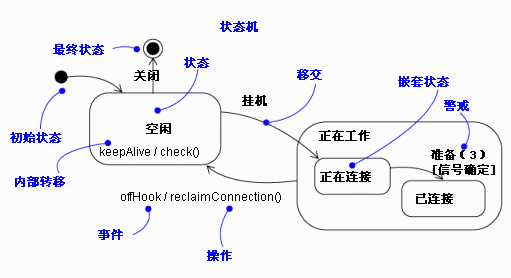
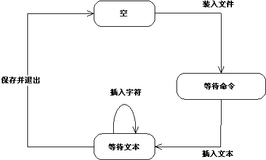
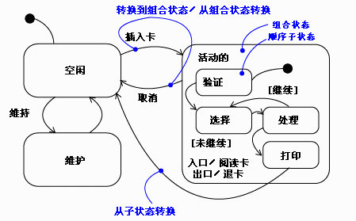
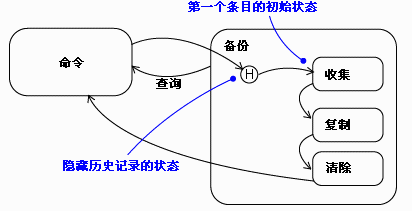
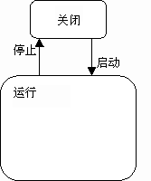
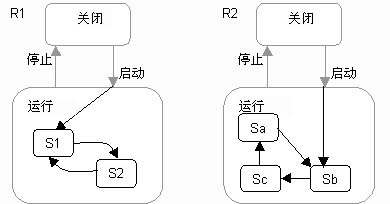
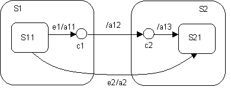

| 指南：状态表图 |
 |
|
说明状态机用于对模型元素的动态行为进行建模，更具体地说，就是对系统行为中受事件驱动的方面进行建模（请参阅概念：事件与信号）。状态机特别用于定义状态相关的行为，或根据模型元素的状态而变化的行为。如果模型元素的行为不随元素状态而变化，模型元素则不需要状态机来描述其行为（这些元素通常为被动类，主要负责管理数据）。特别地，状态机必须用来对使用调用事件和信号事件来实施操作（和类的状态机中的转移一样）的活动类的行为进行建模。 状态机由转移所链接的几种状态组成。状态是对象执行某项任务或等待某个事件时的情况。转移是两个状态之间的一种关系，它由某个事件触发，执行某些操作或评估，并产生特定的最终状态。状态机的元素在图 1 中有所描述。  图 1. 状态机符号表示法。 一个简单的编辑器可被视为有限的状态机，其状态为空、等待命令和等待文本。事件装入文件、插入文本、插入字符和保存并退出导致了状态机中的转移。下面的图 2 中描述了编辑器的状态机。  图 2. 简单编辑器的状态机。 状态状态是对象执行某项任务或等待某个事件时的情况。对象可能在有限的一段时间内保持某一状态。状态有几种属性：
如图 1 中所描述的，存在两个可能为某一对象的状态机定义的特别状态。初始状态表示状态机或子状态的缺省起始位置。初始状态描绘为实心黑圆圈。最终状态表示状态机执行的完成，或封闭状态已完成。最终状态表示为一个实心黑色圆圈外套一个空心圆圈。 初始状态和最终状态实际上是虚假的状态。除名称之外，两者都不含正常状态的常见部分。从初始状态转移到最终状态，这可能会全面补充各种特性，包括警戒条件和操作，但可能不含触发事件。 转移转移是两个状态之间的一种关系，表示处于第一个状态的对象将执行一定的操作，并在发生指定的事件且满足指定的条件时进入第二个状态。当发生这样的状态变化时，即认为转移“击发”。在转移击发之前，一直认为对象处于“源”状态；击发后，认为转移处于“目标”状态。转移有几种属性：
一个转移可能有多个源，这种情况下它代表多个并发状态的连接；以及多个目标，这种情况下它代表多个并发状态的交叉。 事件触发器在状态机的环境中，事件是可触发状态转移的激励事件。 事件可能包括信号事件、调用事件、时间流逝或状态更改。信号或调用事件所带参数的参数值可能可用于转移，这包括警戒条件和操作的表达式。还可能存在无触发的转移，这表示为不含事件触发的转移。这些转移也被称为完成转移，它们在源状态完成其任务后将被隐式触发。 警戒条件警戒条件是在转移的触发事件发生后进行求值的。只要警戒条件不重叠，就可能使用相同的事件触发，从同一源状态进行多个转移。 警戒条件仅在事件发生时为转移进行一次求值。布尔表达式可能引用对象的状态。 操作操作是可执行的元计算，就是说它不能因为某一事件而中断，所以将一直运行到完成为止。它与任务相反，因为任务可能被其他事件中断。 操作可能包括操作调用（调用状态机的所有者以及其他可见的对象），另一对象的创建或破坏，或是向另一对象发送信号。在发送信号的情况下，信号名称的前缀是关键字“send”。 进入和退出操作进入和退出操作允许在每次进入或退出状态时分别快速执行相同的操作。 进入和退出操作支持干净利落地完成上述操作，而不必对每个传入和传出转移执行显式操作。进入和退出操作可能不含实参或警戒条件。模型元素状态机的顶级进入操作可能具有某些参数，它们代表创建元素时机器收到的实参。 内部转移内部转移允许在保持状态不变的情况下处理事件，从而避免触发进入或退出操作。内部转移可能含有带参数和警戒条件的事件，本质上代表了中断处理器。 延迟的事件某些事件的处理工作一直推迟到这些事件不延迟时所处的状态成为活动状态，这些事件即为延迟的事件。 该状态变为活动状态后，将触发事件的发生，并可能导致进行转移，就象事件刚发生过一样。 延迟事件的实施需要将事件组成内部队列。如果某个事件已发生但被列为延迟，则将该事件列入队中。一旦该对象进入不延迟这些事件处理的某一状态，事件就立即离开该队列。 子状态简单状态是指不含子结构的状态。含有子状态（嵌套状态）的状态被称为组合状态。可嵌套任意层的子状态。一个嵌套状态机可能至少有一个初始状态和一个最终状态。子状态通过显示仅在特定环境（封闭状态）内可能存在的某些状态，用以简化复杂的平面状态机。  图 3. 子状态。 转移可从封闭组合状态之外的某个源起，以组合状态或某个子状态为目标。如果目标为组合状态，嵌套状态机则必须包含初始状态，进入组合状态和快速执行进入操作（如果有）后控制权传递到该状态。如果目标为嵌套状态，则在快速执行组合状态的进入操作（如果有）及随后嵌套状态的进入操作（如果有）之后，控制权传递到嵌套状态。 通向某一组合状态的转移可能将该组合状态或某一子状态作为它的源。在任一情况下，控制权都首先离开嵌套状态（并快速执行退出操作，如果有），然后离开组合状态（并快速执行退出操作，如果有）。源状态为复合状态的转移基本上会中断嵌套状态机的任务。 历史状态除非另有指定，否则当转移进入组合状态时，将在初始状态再一次启动嵌套状态机的操作（除非转移直接以子状态为目标）。历史状态允许状态机再次进入它离开组合状态之前的最后一个活动的子状态。图 3 中展示了历史状态用途的一个示例。  图 4. 历史状态。 常用的建模技术状态机最常用于为对象在整个生存期内的行为建模。当对象具有状态相关行为时，就特别需要状态机。可能具有状态机的对象包括：类、子系统、用例和接口（以声明实现该接口的对象必须满足的状态）。在使用实时系统的情况下，状态机还用于封装体和协议（以声明实现该协议的对象必须满足的状态）。 并非所有对象都需要状态机。如果对象的行为较简单，可简单地存储或检索数据，那么对象的行为处于恒定状态，状态机也没什么用处。 为对象的生存期进行建模涉及三个事项：指定对象可响应的事件、对这些事件的响应以及过往行为对当前行为的影响。对象生存期的建模还涉及：决定对象对事件做出有意义响应的顺序，在对象创建时开始建模，并一直继续到对象破坏为止。 要为对象的生存期建模：
提示与技巧
使用抽象状态机进行设计抽象状态机是一种在实际使用之前需要添加更多详细信息的状态机。抽象状态机可用于定义一般的、可重用的行为，这种行为在后续模型元素中得到进一步优化。  图 5. 抽象状态机。 请考虑图 5 中的抽象状态机。图 5 中的简单状态机代表了事件驱动的系统中许多不同元素类型的最抽象的行为（自动“控制”）。 尽管它们共享这种高级形式，但不同元素类型在“运行”状态可能具有差别甚大的详细行为，这取决于它们的用途。因此，该状态机最有可能在某个抽象类中定义，该抽象类充当不同的专门活动类的根类 因此，我们可使用继承来定义该抽象状态机的这两种不同的改进。图 6 中显示了这两种改进，R1 和 R2。为了清楚起见，我们使用灰色笔绘制了继承自父类的元素。  图 6. 图 5 中状态机的两种改进。 这两种改进形式的明显差异在于它们分解“运行”状态的方式和它们扩展初始“启动”转移的方式。当然，一旦知道了改进，就只能做出这些选择，因此在抽象类中就无法通过单个端到端转移来做出选择。 链式状态对于上述的改进类型而言，能够“继续”输入转移和输出转移是基本的能力。似乎入口点和最终状态结合延续转移就足以提供这些语义。不幸的是，当有多个不同的转移需要扩展时，这就不够了。 抽象行为模式所需要的是将两个或更多在单个运行－完成步骤范围内执行的转移段链接起来的一种方式。这意味着进入层次结构状态的转移会分割为在状态边界有效终止的进入部分和在该状态内延续的扩展部分。类似地，始于分层嵌套状态的传出转移会分割为在封闭状态边界终止的部分和从状态边界延续到目标状态的部分。可在 UML 中通过引入链状态概念来实现该效果。这是通过 UML 状态的造型概念（<<chainState>>）进行建模的。该状态的唯一用途是将更多的自动（无触发器）转移“链接”到输入转移上。链式状态没有内部结构：没有进入操作，没有内部活动，没有退出操作。也没有由事件触发的转移。它可能含有任意数目的输入转移。还可能含有不带触发事件的传出转移；当某一输入转移激活该状态时，该转移就自动击发。该状态用于将输入转移与单独的输出转移链接起来。在（若干）输入转移和链接的输出转移之间，一个状态连接了包含状态内的其他状态，而另一状态连接了包含状态之外的其他状态。引入链状态是为了将包含状态的内部规范与其外部环境分开来；这是封装的问题。 实际上，链式状态代表的是一种“串通”状态，它用于将某个转移链接到一个特定的继续转移。如果未定义延续转移，则转移终止于链状态，而封闭状态的某种转移最终必须击发才能向前移动。 图 7 中的状态机示例段说明了链状态及其符号表示。在状态机图中，使用处于适当层次结构状态的小白圈来表示链状态（该表示法与初始状态和最终状态相似）。圆圈为链状态的典型造型图标，为方便起见，通常将其绘制在边界附近。（事实上，要使用不同的表示法，则将其绘制在封闭状态的边界上。）  图 7. 链状态和链接的转移。 该示例中的链接的转移由三个链接的转移段 e1/a11-/a12-/a13 组成。收到信号 e1 后，将采取 e1/a11 转移，执行其操作，然后达到链状态 c1。 此后，将采用 c1 和 c2 之间的延续转移，最终，由于 c2 也是链状态，故从 c2 转移到 S21。如果这些路径中的状态均含有退出和进入操作，执行操作的实际顺序将如下：
所有这些操作均在单个运行－完成步骤范围内执行。 这应与直接转移 e2/a2 的操作执行语义进行比较，执行顺序为：
|
© Copyright IBM Corp. 1987, 2006. All Rights Reserved. |